¿Qué es JavaScript?
JavaScript es un lenguaje de programación que los desarrolladores utilizan para hacer páginas web interactivas. Desde actualizar fuentes de redes sociales hasta mostrar animaciones y mapas interactivos, las funciones de JavaScript pueden mejorar la experiencia del usuario de un sitio web. Como lenguaje de scripting del lado del servidor, se trata de una de las principales tecnologías de la World Wide Web.
¿Para qué se utiliza JavaScript?
Anteriormente, las páginas web eran estáticas, similares a las páginas de un libro. Una página estática mostraba principalmente información en un diseño fijo y no todo aquello que esperamos de un sitio web moderno. JavaScript surgió como una tecnología del lado del navegador para hacer que las aplicaciones web fueran más dinámicas. Por medio de JavaScript, los navegadores eran capaces de responder a la interacción de los usuarios y cambiar la distribución del contenido en la página web.
A medida que el lenguaje evolucionó, los desarrolladores de JavaScript establecieron bibliotecas, marcos y prácticas de programación y comenzaron a utilizarlo fuera de los navegadores web. En la actualidad, puede utilizar JavaScript para el desarrollo tanto del lado del cliente como del lado del servidor.
Tipos de Datos
JavaScript tiene tipos de datos primitivos como:
- String: Es un tipo de dato que se utiliza para representar texto. Es una cadena de caracteres rodeada por comillas simples ('), comillas dobles (") o comillas invertidas (`). 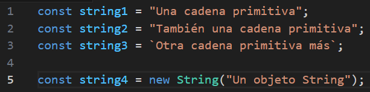
- Number: Se utiliza para representar valores numéricos. Los valores de tipo Number pueden ser enteros o números en coma flotante (decimales). 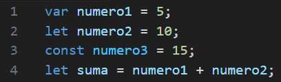
- Boolean: Representa uno de dos valores: true o false. 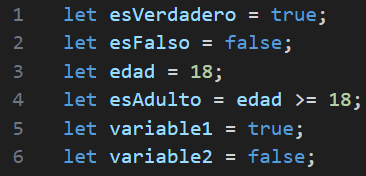
- Undefined: Es un valor que se asigna automáticamente a una variable que ha sido declarada pero no inicializada.
- Null: Es un valor que representa la ausencia intencional de cualquier objeto o valor. 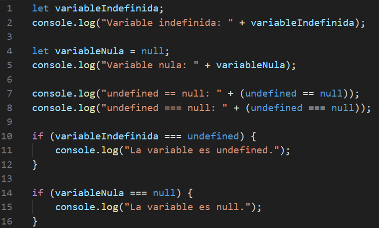
- Symbol: Son identificadores únicos que se utilizan principalmente para evitar conflictos de nombres en las propiedades de los objetos. 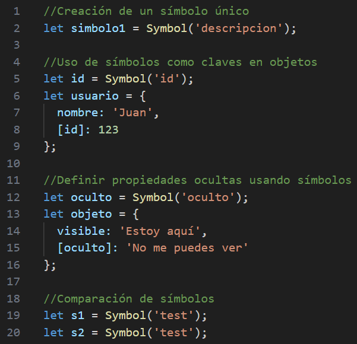
- BigInt: Es un tipo de dato en JavaScript introducido en ECMAScript 2020 que permite representar y trabajar con números enteros de tamaño arbitrario. 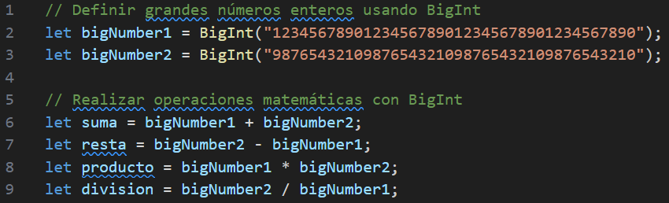
Y tipos complejos como:
- Object: Es uno de los tipos de datos fundamentales y se utiliza para almacenar colecciones de datos y entidades más complejas. 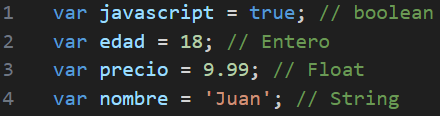
Variables
Se pueden declarar con var, let y const.
- var: Antes de ES6 la única forma de crear variables en JavaScript era con la palabra var y su alcance era global o de función. 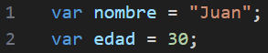
- let: Te permite declarar variables limitando su alcance (scope) al bloque, declaración, o expresión donde se está usando.a diferencia de la palabra clave var la cual define una variable global o local en una función sin importar el ámbito del bloque. 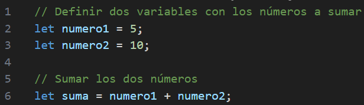
- const: Esta declaración crea una constante cuyo alcance puede ser global o local para el bloque en el que se declara y no puede ser reasignada. 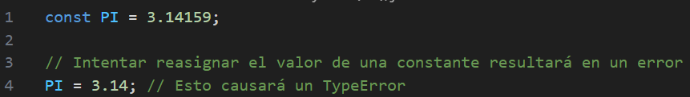
Funciones
Las funciones son bloques de código reutilizables. Pueden ser declarativas o anónimas. JavaScript también tiene funciones de orden superior, como las utilizadas en los métodos de los arrays (map, filter, etc.).
Funciones Declarativas: Se definen utilizando la palabra clave function seguida del nombre de la función, parámetros entre paréntesis y el cuerpo de la función entre llaves. Por ejemplo:
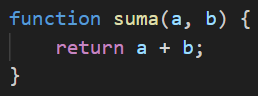Funciones Anónimas: No tienen un nombre explícito y se suelen utilizar como funciones de callback. Pueden ser asignadas a variables:
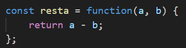Funciones de Flecha: Son una sintaxis más compacta para definir funciones anónimas. No tienen su propio this y son muy útiles en los métodos de arrays:
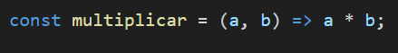Además, las funciones de orden superior son aquellas que pueden recibir otras funciones como argumentos o devolver funciones como resultado. Métodos como map, filter y reduce son ejemplos clásicos de funciones de orden superior que facilitan el trabajo con arrays:
- map: Aplica una función a cada elemento de un array y retorna un nuevo array con los resultados. 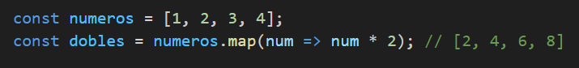
- filter: Filtra los elementos de un array basado en una condición y retorna un nuevo array con los elementos que cumplen dicha condición. 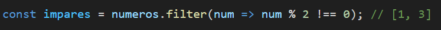
- reduce: Reduce un array a un único valor aplicando una función de acumulación. 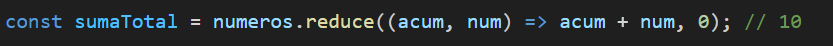
Objetos y Arrays
- Objetos: Los objetos son estructuras que permiten almacenar múltiples valores en una sola entidad. Estos valores se guardan como pares clave-valor, donde las claves son únicas dentro del objeto. 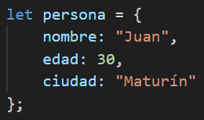
- Arrays: Son listas ordenadas de elementos, y cada elemento se encuentra en una posición (índice) específica. Los índices en un array comienzan en 0. 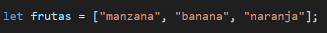
Los objetos y los arrays pueden ser combinados y anidados para crear estructuras de datos más complejas. Por ejemplo, un array de objetos:
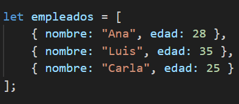Asincronía
JavaScript maneja operaciones asincrónicas con callbacks, promesas y async/await, lo que permite manejar tareas como llamadas a APIs sin bloquear la ejecución del código.
Callbacks: Los callbacks son funciones que se pasan como argumentos a otras funciones y se ejecutan después de que la operación asincrónica haya terminado.
Promesas: Las promesas son objetos que representan el resultado de una operación asincrónica y pueden ser resueltas o rechazadas.
Async/Await: Son una sintaxis más reciente y conveniente para trabajar con promesas. Permiten escribir código asincrónico de manera más clara y legible.
DOM (Document Object Model)
Es una representación en árbol de los elementos HTML de una página web, y JavaScript permite interactuar con el DOM para modificar el contenido dinámicamente (añadir, eliminar o cambiar elementos).
Eventos
JavaScript permite gestionar eventos (como clics o teclas presionadas) para hacer que las páginas web sean interactivas, mediante el uso de event listeners.
Eventos Comunes
ES6 y Nuevas Características
ECMAScript 6 (ES6) introdujo nuevas características como:
- Clases para la programación orientada a objetos.
- Funciones flecha (→).
- Template literals para concatenación de cadenas de texto.
- Desestructuración de objetos y arrays.
- Módulos para dividir el código en archivos.
Programación Orientada a Objetos (OOP)
JavaScript soporta la creación de objetos y la herencia a través de prototipos. ES6 introdujo las clases para facilitar la OOP en el lenguaje.
Antes de ES6:
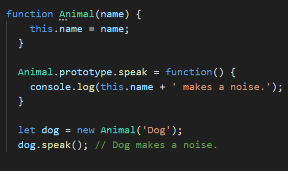Con ES6:
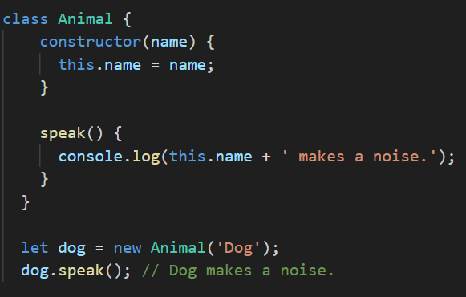La sintaxis de clase de ES6 ofrece una forma más clara y sencilla de implementar la herencia y las características de la OOP en JavaScript.